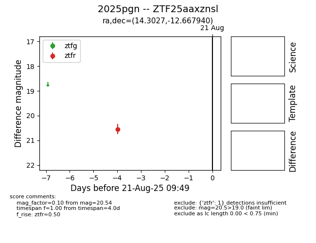

Target 2025pgn at 2025-08-22 17:16, see:
FINK: fink-portal.org/ZTF25aaxznsl
Lasair: lasair-ztf.lsst.ac.uk/objects/ZTF25aaxznsl
ALeRCE: alerce.online/object/ZTF25aaxznsl
TNS: wis-tns.org/object/2025pgn
YSE: ziggy.ucolick.org/yse/transient_detail/2025pgn
alt names
ZTF25aaxznsl (ztf,alerce)
2025pgn (tns,yse)
coordinates:
equatorial (ra, dec) = (14.3027,-12.66794)
galactic (l, b) = (128.5552,-75.47662)
photometry
last ztfr=20.54
1 ztfr detections
